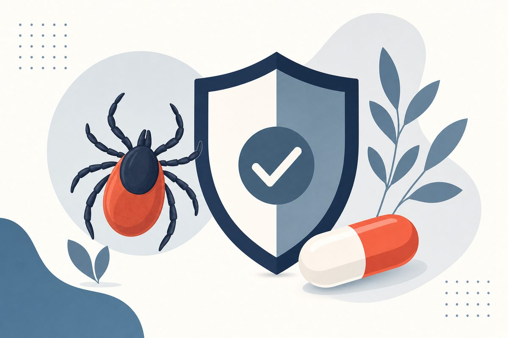
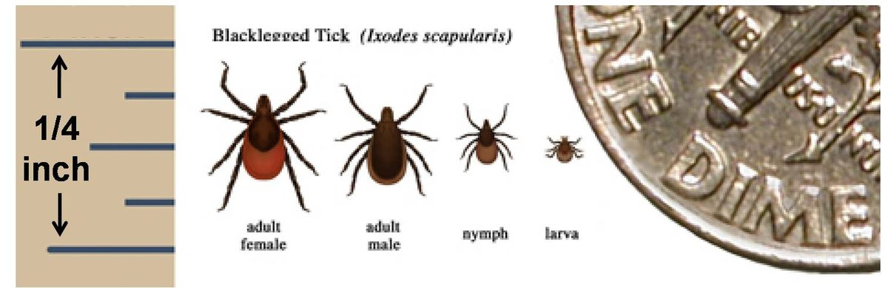
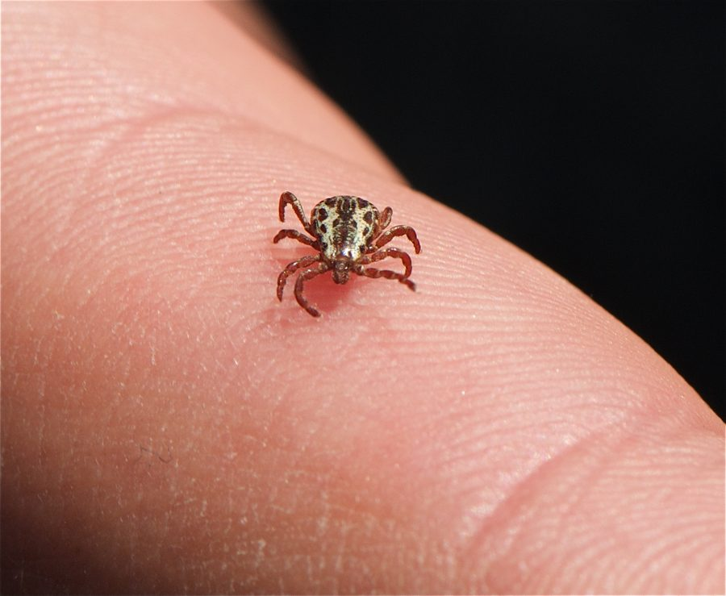
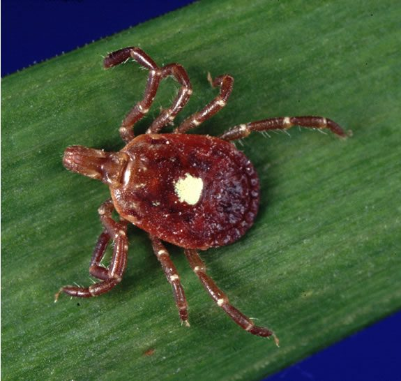
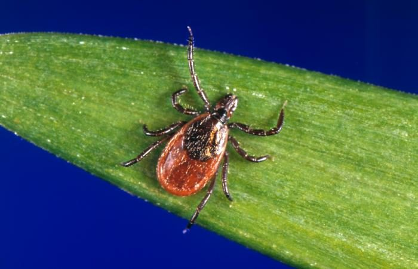

Key Takeaways
- Remove ticks as soon as possible using fine-tipped tweezers and steady, even pressure. Do not twist, crush, or apply petroleum jelly.
- Single-dose doxycycline 200 mg prophylaxis is recommended when all four IDSA conditions are met: an identified Ixodes tick, a highly endemic area, attachment ≥36 hours, and administration within 72 hours of removal.
- The erythema migrans rash appears 3–30 days after a bite, expands beyond 5 cm, and warrants clinical Lyme disease diagnosis without lab confirmation in endemic areas.
- The erythema migrans stage of Lyme disease is treated with doxycycline 100 mg twice daily for 10 days, or amoxicillin or cefuroxime axetil for 14 days. People treated early usually recover rapidly and completely.
- Rocky Mountain spotted fever is the most frequently fatal rickettsial illness in the United States; start doxycycline as soon as it is suspected, without waiting for lab results.
- Lone star tick bites can trigger alpha-gal syndrome, an allergy to red meat and other products from mammals.

Most people who find a tick on their skin feel an immediate urge to pull it off as fast as possible, which is exactly right. What comes after that moment, though, is where decisions matter. A single tick bite can lead to Lyme disease, Rocky Mountain spotted fever, or a delayed allergy to red meat, depending on the tick species, how long it was attached, and where you live. Getting those details right determines whether you need a preventive antibiotic, watchful waiting, or urgent emergency care.
Lyme disease is the most common vectorborne disease in the United States. In 2022, 62,551 Lyme disease cases (confirmed and probable) were reported to CDC, 1.7 times the 2017 to 2019 annual average, an increase CDC attributes mainly to a change in surveillance methods rather than a change in disease risk.[3] CDC also notes that surveillance likely does not capture all cases.[3] Most reported cases come from the Northeast, mid-Atlantic, and upper Midwest, and national surveillance since 1991 has documented a steady increase in incidence and geographic range.[3]
This guide covers everything from how to safely remove a tick to interpreting the 2020 IDSA/AAN/ACR Lyme disease clinical practice guidelines, identifying the rashes that require treatment, and recognizing the less common but serious tick-borne illnesses that get missed because they are mistaken for summer flu.
Know Your Tick: Why Species Identification Matters
Not all ticks carry the same pathogens. The species of tick attached to you directly determines your disease risk, and whether you qualify for Lyme prophylaxis. In the United States, three species account for most clinically significant tick-borne illness.
| Tick Species | Size | Appearance | Geographic Range | Diseases Transmitted |
|---|---|---|---|---|
| Ixodes scapularis Blacklegged tick / Deer tick |
Smallest; nymphs are about the size of a poppy seed[11] | Orange-red body; black scutum (hard plate) | Widely distributed across the eastern U.S.; transmits Lyme disease in the northeastern, mid-Atlantic, and north-central U.S.[11][15] | Lyme disease, anaplasmosis, babesiosis, Powassan virus disease[15] |
| Dermacentor variabilis American dog tick |
Larger than the deer tick | Larger body; distinctive cream or off-white scutum on dark brown background | Widely distributed east of the Rocky Mountains; also found in Pacific coastal areas[15][8] | Rocky Mountain spotted fever, tularemia[15] |
| Amblyomma americanum Lone star tick |
Larger than the deer tick | Single white spot on center of female's back (the "lone star") | Widely distributed in the eastern U.S., but more common in the South[15] | Ehrlichiosis, STARI, tularemia; linked to alpha-gal syndrome[15] |



Size is the most practical differentiator. Deer tick nymphs pose a particularly high risk because of their abundance and small size: they are about the size of a poppy seed.[11] They are easy to miss in a post-outdoor tick check.
The western blacklegged tick (Ixodes pacificus) transmits Lyme disease bacteria in areas along the Pacific Coast,[11] and it is the principal vector of anaplasmosis along the West Coast.[8] The IDSA prophylaxis criteria apply to bites from any identified Ixodes species.[1] If you are hiking along the Pacific Coast, Ixodes pacificus is the tick to watch for.

How to Remove a Tick Correctly
Speed matters. Delaying tick removal to get help from a healthcare provider could increase your risk of a tick-borne disease, so remove the tick yourself right away.[4] For Lyme disease specifically, the 2020 IDSA/AAN/ACR guideline notes that most Borrelia burgdorferi transmission occurs after 36 to 48 hours of attachment.[1]
Step-by-Step Removal
- Use clean, fine-tipped tweezers. Grasp the tick as close to the skin's surface as possible.[4] The goal is to grip the mouthparts, not the body.
- Pull the tick away from the skin with steady, even pressure. Do not twist or jerk it, which can cause the mouthparts to break off and remain in the skin.[4]
- Clean the bite area and your hands thoroughly with soap and water, rubbing alcohol, or hand sanitizer after removal.[4]
- Save or photograph the tick before disposal. Place it in a sealed container or in alcohol, wrap it tightly in tape, or flush it down the toilet. Do not crush it with your fingers.[4]
- Record the date of removal. If you develop a rash or fever in the weeks after removal, this information helps your clinician assess timing and risk.
Do not use petroleum jelly, heat, nail polish, or other substances to try to make the tick detach from the skin. CDC advises removing the tick as quickly as possible with tweezers instead.[4]
Single-Dose Doxycycline: The IDSA Prophylaxis Protocol
The 2020 IDSA/AAN/ACR Lyme disease clinical practice guidelines recommend a single oral dose of doxycycline after a tick bite, but only for a high-risk bite.[1] The guidelines recommend against prophylaxis for bites of equivocal or low risk.[1] All four of the following conditions must be present.
| Criterion | Details | Why It Matters |
|---|---|---|
| 1. Tick species | An identified Ixodes spp. tick (deer tick or western blacklegged tick)[1] | Only Ixodes ticks transmit Borrelia burgdorferi. Dog ticks and lone star ticks do not.[11] |
| 2. Endemic area | Bite occurred in a highly endemic area[1], such as a high-incidence jurisdiction in the Northeast, mid-Atlantic, or upper Midwest[3] | Lyme risk is geographically focal: in 2022, 95.5% of reported cases came from high-incidence jurisdictions.[3] |
| 3. Attachment time | Tick was attached for ≥36 hours[1] (if the tick is engorged with blood, the risk is higher)[2] | Most transmission occurs after 36 to 48 hours of attachment.[1] In the 2001 trial, no Lyme rash followed untreated bites from flat, unfed nymphs.[6] |
| 4. Time since removal | Prophylaxis can be administered within 72 hours of tick removal[1] | The recommendation covers a dose given within this window. Outside these conditions, a wait-and-watch approach is recommended.[1] |
When all four criteria are met, the recommended dose is doxycycline 200 mg as a single oral dose for adults, or 4.4 mg/kg (maximum 200 mg) for children weighing less than 45 kg.[1][2] In the randomized trial behind the recommendation, a single 200 mg dose given within 72 hours of tick removal had an efficacy of 87%, though that figure comes from a single study and carries meaningful uncertainty (see below).[6]
When the criteria are not fully met, the IDSA guidelines recommend against antibiotic prophylaxis and favor a wait-and-watch approach.[1] Watch for a rash or fever in the weeks after the tick is removed, and see a clinician promptly if either develops.[4]
The single-dose recommendation rests largely on one U.S. randomized trial from 2001, which reported 87% efficacy with a wide 95% confidence interval (25% to 98%) and used the erythema migrans rash rather than confirmed infection as its endpoint: the rash developed in 1 of 235 treated subjects versus 8 of 247 placebo subjects.[6] Adverse effects, mainly nausea and vomiting, were more frequent with doxycycline than with placebo (30.1% vs 11.1%).[6] The IDSA, AAN, ACR, and CDC endorse single-dose prophylaxis for high-risk bites,[1][2] and the approach described here follows that U.S. guideline standard.
The 2020 IDSA guidelines recommend single-dose doxycycline for high-risk Ixodes bites in all age groups, and note a growing consensus that doxycycline is safe in young children for courses of up to at least 14 days.[1] For pregnant women, the guidelines do not issue a blanket recommendation against prophylaxis; they advise pregnant women to have an informed discussion with their physicians about the risks and benefits.[1]
Recognizing the Erythema Migrans Rash
The erythema migrans (EM) rash is the most reliable early sign of Lyme disease and the one finding that allows clinical diagnosis without laboratory testing. In a patient who lives in or has recently traveled to a Lyme-endemic area and presents with a characteristic EM rash, the 2020 IDSA guidelines recommend clinical diagnosis rather than laboratory testing,[1] and CDC advises prompt treatment regardless of whether serologic testing is ordered.[13]
What to Look For
- Timing: Appears 3–30 days after the tick bite, with an average of about 7 days.[12]
- Size: Expands gradually over several days to more than 5 cm across,[15] and can reach 30 cm (12 inches) or more.[12]
- Appearance: Some rashes clear in the center as they enlarge, giving a target or bull's-eye appearance.[12] Others are a solid red expanding rash of a different shape, without a bull's-eye pattern.[5]
- Texture: May feel warm to the touch but is rarely itchy or painful.[12]
- Location: Begins at the site of the tick bite, which can be on any area of the body. Additional EM rashes on other areas of the body are a later sign of spreading infection.[12]
Up to 30% of people with Lyme disease never develop or notice an EM rash.[5] The absence of a rash does not rule out Lyme disease. If you had a tick bite in the past month and now have unexplained fever, fatigue, muscle and joint aches, or swollen lymph nodes, a clinical evaluation is appropriate even without a rash.
Patients and even some clinicians wait for the classic bull's-eye pattern before acting on a rash. This is a mistake. Many EM rashes never develop central clearing. Any expanding red rash appearing at a tick bite site within 30 days, whatever its pattern, should be evaluated as possible Lyme disease. Rashes on darker skin can also be harder to see and may not appear as prominently red.
Lyme Disease Stages: What Happens If It Goes Untreated
Lyme disease caused by Borrelia burgdorferi progresses through three stages if untreated. Early diagnosis and proper antibiotic treatment can help prevent late Lyme disease.[13] The stakes increase substantially with each stage.
Stage 1: Early Localized (Days to ~1 Month After Bite)
The bacteria remain near the bite site. The EM rash is the hallmark. Accompanying symptoms often resemble flu: fever, fatigue, muscle or joint pain that moves around the body, loss of appetite, and swollen lymph nodes, which can appear anywhere on the body, not only near the bite.[5]
Stage 2: Early Disseminated (Weeks to Months After Bite)
The bacteria spread to other parts of the body. This stage can involve many rashes on other parts of the body; muscle weakness on one or both sides of the face (facial palsy); neck pain or stiffness; pain that starts in the back and hips and spreads to the legs; pain, numbness, or weakness in the hands or feet; and irregular heartbeats caused by immune activity in heart tissue (Lyme carditis).[7] Lyme meningitis can cause fever, headache, sensitivity to light, and a stiff neck.[14] Meningitis and carditis are potentially serious, and both warrant prompt medical attention.
Stage 3: Late Disseminated (Months to Years After Bite)
In the United States, the most common condition of this stage is Lyme arthritis in large joints, particularly the knees.[7] Treatment for this stage is described below.
Lyme Disease Treatment: What the 2020 Guidelines Recommend
The 2020 IDSA/AAN/ACR guidelines provide specific antibiotic recommendations based on disease stage and presentation.[1] People treated with appropriate antibiotics in the early stages of Lyme disease usually recover rapidly and completely.[13]
Early Localized Lyme Disease (Erythema Migrans)
Oral antibiotics are the standard of care. The guidelines recommend doxycycline, amoxicillin, or cefuroxime axetil, as a 10-day course of doxycycline or a 14-day course of amoxicillin or cefuroxime axetil.[1] Doses as listed by CDC:[13]
- Doxycycline 100 mg twice daily for 10 days (CDC lists 10 to 14 days). Children: 4.4 mg/kg per day divided into 2 doses, maximum 100 mg per dose.
- Amoxicillin 500 mg three times daily for 14 days. Children: 50 mg/kg per day divided into 3 doses, maximum 500 mg per dose.
- Cefuroxime axetil 500 mg twice daily for 14 days. Children: 30 mg/kg per day divided into 2 doses, maximum 500 mg per dose.
Doxycycline is also the drug needed if coinfection with Anaplasma phagocytophilum, the cause of anaplasmosis, is suspected.[1]
Early Disseminated Lyme Disease
For neurologic Lyme disease without brain or spinal cord involvement, such as meningitis, cranial nerve palsy, or radiculoneuritis, the guidelines recommend IV ceftriaxone, cefotaxime, penicillin G, or oral doxycycline, preferably for 14–21 days.[1] For adults with meningitis or radiculoneuritis, CDC lists oral doxycycline 200 mg per day, given as 1 or 2 doses, or IV ceftriaxone 2 g once a day, each for 14–21 days.[14] When the brain or spinal cord itself is involved, IV antibiotics are recommended over oral.[1] For Lyme carditis, the guidelines suggest oral antibiotics for outpatients, initial IV ceftriaxone for hospitalized patients until there is evidence of clinical improvement, and 14–21 days of total therapy.[1]
Lyme Arthritis (Late Disseminated)
Oral antibiotic therapy for 28 days is the initial treatment.[1] For patients with no or minimal response, the guidelines suggest a 2- to 4-week course of IV ceftriaxone over a second oral course; for a partial response, they make no recommendation between a second course of antibiotics and observation.[1]
Some patients experience lingering fatigue, pain, or cognitive difficulty for months after completing antibiotic therapy. This is often referred to as post-treatment Lyme disease syndrome (PTLDS). For persistent or recurring nonspecific symptoms after recommended treatment, without objective evidence of reinfection or treatment failure, the 2020 IDSA guidelines recommend against additional antibiotic therapy.[1] Management focuses on symptom relief and functional rehabilitation.
Other Tick-Borne Diseases: When the Diagnosis Isn't Lyme
Lyme disease gets most of the attention, but other tick-borne illnesses can be serious, and some are more immediately dangerous than Lyme. Several are transmitted by the same deer tick that causes Lyme, meaning coinfection is possible.
Anaplasmosis
Caused by Anaplasma phagocytophilum and transmitted by deer ticks, anaplasmosis is most common in the northeastern and upper Midwestern United States.[8] Symptoms typically appear 5–14 days after the bite and usually include fever, headache, malaise, and muscle aches, with characteristic lab findings of low platelet and white blood cell counts and elevated liver enzymes.[8] Doxycycline (100 mg twice daily for adults) is the treatment, and fever typically subsides within 24–48 hours when it is started in the first 4–5 days of illness. CDC recommends 10 days of doxycycline for anaplasmosis, which also covers possible Lyme coinfection.[8] Coinfection should be investigated in patients with Lyme disease who have a persistent fever for more than 1 day while on antibiotic treatment.[1]
Babesiosis
Also transmitted by deer ticks, babesiosis in the United States is caused mainly by Babesia microti, a parasite that infects red blood cells.[8][15] Many infections cause no symptoms, but babesiosis can cause hemolytic anemia, and the risk of severe disease is higher in people without a spleen, older adults, and people with impaired immune function.[15] The preferred treatment is atovaquone plus azithromycin for 7–10 days; clindamycin plus quinine is the alternative, and some patients with severe disease may benefit from exchange transfusion.[15]
Rocky Mountain Spotted Fever (RMSF)
RMSF is caused by Rickettsia rickettsii, transmitted mainly by the American dog tick (Dermacentor variabilis) in the eastern, central, and Pacific coastal United States and the Rocky Mountain wood tick (Dermacentor andersoni) in the West.[8] Despite the name, during 2008 to 2012, 63% of reported spotted fever group rickettsiosis cases, the group that includes RMSF, came from Arkansas, Missouri, North Carolina, Oklahoma, and Tennessee.[8] RMSF is the most frequently fatal rickettsial illness in the United States.[8]
Classic RMSF presents with fever, headache, and a rash that typically appears 2–5 days after symptoms begin.[15] The rash starts as small pink spots on the ankles, wrists, or forearms, then spreads and often becomes petechial (small red or purple dots under the skin).[8] Treatment should never be delayed while awaiting laboratory confirmation, and doxycycline is recommended for suspected RMSF in patients of all ages, including children and pregnant women.[8][10] Delay in diagnosis and treatment is the most important factor associated with death from RMSF.[8]
Ehrlichiosis
Caused by Ehrlichia chaffeensis and transmitted by the lone star tick, ehrlichiosis shares many features with anaplasmosis, including fever, headache, low blood counts, and elevated liver enzymes.[8] It is treated with doxycycline for at least 3 days after the fever subsides and until there is clinical improvement; the minimum total course is typically 5–7 days.[8] The lone star tick is widely distributed in the eastern United States but is more common in the South.[15]
Alpha-Gal Syndrome
Alpha-gal syndrome (AGS) is a delayed allergy to red meat and other mammalian products. In the United States, it most often begins with the bite of the lone star tick.[9] CDC describes AGS as a serious, potentially life-threatening allergy and tickborne disease.[16] Reactions often start about 2 to 6 hours after eating beef, pork, lamb, or other foods from mammals such as dairy products or gelatin, and symptoms range from hives, itching, and stomach upset to anaphylaxis.[9] Because reactions come hours after the meal, patients and clinicians can be slow to connect the allergy to a tick bite.
If you develop unexplained allergic reactions to red meat and live in an area with lone star ticks, bring this possibility up with your physician. Diagnosis includes a test for antibodies the body makes against alpha-gal, and AGS should be managed with an allergist or other healthcare provider.[16] The only treatment is to avoid red meat and other mammal products that trigger reactions, and a serious reaction may need epinephrine and emergency care.[9]
Where Lyme Disease Risk Is Highest in the United States
Lyme disease risk is not uniform across the country. The geographic distribution of Ixodes scapularis ticks and B. burgdorferi infection rates together determine where antibiotic prophylaxis after a tick bite is most warranted.
Highest incidence areas. In CDC's 2022 surveillance report, the high-incidence jurisdictions were Connecticut, Delaware, the District of Columbia, Maine, Maryland, Massachusetts, Minnesota, New Hampshire, New Jersey, New York, Pennsylvania, Rhode Island, Vermont, Virginia, West Virginia, and Wisconsin.[3] Rhode Island had the highest reported incidence in 2022, at 212.0 cases per 100,000 residents, followed by Vermont and Maine.[3]
Expanding range: National surveillance, which began in 1991, has documented a steady increase in Lyme disease incidence and geographic range.[3]
Pacific Coast: The western blacklegged tick (Ixodes pacificus) transmits Lyme disease bacteria in areas along the Pacific Coast.[11] California, Oregon, and Washington are classified as low-incidence jurisdictions,[3] but risk is real for people hiking or camping in known tick habitat.
If you are unsure whether a tick bite occurred in a Lyme-endemic area, the CDC Lyme disease case maps and your state health department's tick surveillance data are the most reliable references. When in doubt, a telehealth consultation allows a clinician to assess your specific geographic and clinical risk in real time.
Red Flags: When to Seek Emergency Care
Most tick bites and even early Lyme disease can be managed through a primary care or telehealth visit. A few situations require emergency evaluation without delay.
- High fever with severe headache and neck stiffness: possible meningitis or RMSF
- Petechial rash (small red or purple non-blanching spots, especially on wrists and ankles): RMSF until proven otherwise
- Fainting, near-syncope, or severe palpitations: possible Lyme carditis with high-degree heart block
- Facial droop or sudden muscle weakness: may indicate early disseminated Lyme disease with neurologic involvement
- Confusion, altered mental status, or inability to stay awake: severe systemic infection
- Anaphylaxis after eating red meat: possible alpha-gal syndrome requiring epinephrine and emergency management
- Shortness of breath, chest pain, or extremely rapid or irregular heartbeat: Lyme carditis or other systemic illness
For symptoms that are concerning but not immediately threatening, such as a rash that may be erythema migrans, flu-like illness after a tick bite, or questions about prophylaxis eligibility, a telehealth visit provides fast access to clinical judgment without an unnecessary emergency room trip.
Practical Tick Prevention
Prevention is far more straightforward than treatment, and a few practical habits reduce the risk.
Before Going Outdoors
- Use EPA-registered repellents. Options include products containing DEET, picaridin, IR3535, oil of lemon eucalyptus (OLE), para-menthane-diol (PMD), or 2-undecanone; do not use OLE or PMD products on children under 3 years old. Clothing and gear can be treated with 0.5% permethrin, which remains protective through several washings.[17]
- Wear protective clothing in wooded or grassy areas, such as long pants tucked into socks and long sleeves. Light-colored clothing makes ticks easier to spot.
After Coming Indoors
- Do a full-body tick check after coming indoors. Check under the arms, in and around the ears, inside the belly button, behind the knees, in and around the hair, between the legs, and around the waist.[17]
- Shower promptly. Showering within 2 hours of coming indoors has been shown to reduce Lyme disease risk and helps wash off unattached ticks.[17]
- Tumble dry clothing on high heat for 10 minutes to kill ticks on dry clothing; damp clothing may need more time.[17]
- Check pets and gear. Ticks can ride into the home on clothing and pets, so examine pets, coats, and daypacks.[17]
Frequently Asked Questions
Most tick bites do not require emergency care. Remove the tick promptly with fine-tipped tweezers, clean the bite area, and watch for a rash or fever in the weeks after removal.[4] Go to the ER immediately if you develop a high fever, a petechial rash (small red or purple dots under the skin), severe headache with neck stiffness, difficulty breathing, confusion, or rapid deterioration. These may indicate Rocky Mountain spotted fever or another serious tick-borne illness requiring urgent treatment.
No. Only Ixodes (deer or blacklegged) ticks transmit Lyme disease, and not all of them carry Borrelia burgdorferi.[11] In a 2001 trial in a hyperendemic area of New York, a Lyme rash developed in 3.2% of people given placebo after a deer tick bite.[6] Risk also rises with attachment time: most transmission occurs after 36 to 48 hours of attachment.[1] Dog ticks and lone star ticks do not transmit Lyme disease, though they can transmit other diseases.[11]
Transmission risk rises with attachment time: the 2020 IDSA/AAN/ACR guideline notes that most transmission occurs after 36 to 48 hours of attachment.[1] If the tick is engorged with blood, the risk of Lyme disease is higher.[2] In a 2001 prophylaxis trial, no Lyme rash developed after untreated bites from flat, unfed nymphs, compared with 9.9% after bites from at least partially engorged nymphs.[6] If you cannot evaluate the tick, save or photograph it before disposal.
Single-dose doxycycline (200 mg for adults) is recommended when all four IDSA conditions are met: the tick is an identified Ixodes species, the bite occurred in a highly endemic area, the tick was attached for 36 hours or longer, and prophylaxis can be administered within 72 hours of removal.[1] When a bite cannot be classified as high-risk with a high level of certainty, the guidelines recommend a wait-and-watch approach rather than antibiotics.[1]
Erythema migrans begins at the site of the tick bite and expands gradually over several days to more than 5 cm across,[15] sometimes reaching 30 cm (12 inches) or more. It sometimes clears in the center as it enlarges, giving a target or bull's-eye appearance, but it can also be a solid red expanding rash. It begins 3–30 days after the bite (average about 7 days), may feel warm to the touch, and is rarely itchy or painful. It occurs in approximately 70 to 80 percent of infected people.[12]
Alpha-gal syndrome (AGS) is a delayed allergy to red meat and other mammalian products. In the United States, it most often begins with the bite of a lone star tick. Eating beef, pork, lamb, or other foods from mammals such as dairy products or gelatin can then cause reactions about 2 to 6 hours later, ranging from hives and stomach pain to anaphylaxis.[9] The delayed timing makes the connection to food difficult to recognize. A test for antibodies the body makes against alpha-gal is part of the diagnosis.[16]
Rocky Mountain spotted fever is transmitted mainly by the American dog tick and the Rocky Mountain wood tick, not deer ticks, and is the more immediately dangerous disease: it is the most frequently fatal rickettsial illness in the United States.[8] Its rash typically starts as small pink spots on the ankles, wrists, or forearms, then spreads and often becomes petechial (small red or purple dots under the skin).[8] Lyme disease usually develops more gradually. When RMSF is suspected based on symptoms and tick exposure, doxycycline should be started without waiting for laboratory confirmation.[8]
Yes. Lyme disease does not confer lasting immunity, and reinfection after another qualifying tick bite is possible. This is distinct from post-treatment Lyme disease syndrome, where symptoms persist after treatment, or from incomplete treatment of the original infection. If you have had Lyme disease before, full prevention practices (tick checks, repellents, protective clothing, and prompt removal) remain just as important every tick season.
The 2020 IDSA/AAN/ACR guidelines recommend single-dose doxycycline for high-risk Ixodes bites in all age groups, and note a growing consensus that doxycycline is safe in young children for courses of up to at least 14 days.[1] Children under 45 kg receive 4.4 mg/kg up to a maximum of 200 mg.[1] For pregnant women, the guidelines do not issue a blanket recommendation against prophylaxis; they advise pregnant women to have an informed discussion with their physicians about the risks and benefits.[1]
Size is the most reliable visual difference. Deer ticks (Ixodes scapularis) are very small: a nymph is about the size of a poppy seed,[11] and an unfed adult female is roughly the size of a sesame seed. Adult female deer ticks have an orange-red body with a black scutum (the hard back plate). Dog ticks (Dermacentor variabilis) are considerably larger, with a distinctive cream or off-white scutum that contrasts sharply against a dark brown body. Lone star ticks fall between the two in size and have a single prominent white spot in the center of the female's back. When uncertain, photograph the tick before disposal.
References
- Lantos PM, Rumbaugh J, Bockenstedt LK, et al. Clinical Practice Guidelines by the Infectious Diseases Society of America (IDSA), American Academy of Neurology (AAN), and American College of Rheumatology (ACR): 2020 Guidelines for the Prevention, Diagnosis and Treatment of Lyme Disease. Clinical Infectious Diseases. 2021;72(1):e1-e48. Guideline text as published on the IDSA website, accessed November 7, 2026. https://www.idsociety.org/practice-guideline/lyme-disease/
- Centers for Disease Control and Prevention. Lyme Disease Prophylaxis After Tick Bite (clinician algorithm, undated PDF). Accessed November 7, 2026. https://www.cdc.gov/lyme/resources/pdfs/lyme-pep-low-ink-p.pdf
- Kugeler KJ, Earley A, Mead PS, Hinckley AF. Surveillance for Lyme Disease After Implementation of a Revised Case Definition, United States, 2022. MMWR Morbidity and Mortality Weekly Report. 2024;73(6):118-123. https://www.cdc.gov/mmwr/volumes/73/wr/mm7306a1.htm
- Centers for Disease Control and Prevention. What to Do After a Tick Bite. Last updated June 9, 2026. Accessed November 7, 2026. https://www.cdc.gov/ticks/after-a-tick-bite/index.html
- Harvard Health Publishing, Lyme Wellness Initiative. Lyme Disease Stages and Symptoms. Updated February 24, 2025. Accessed November 7, 2026. https://www.lyme.health.harvard.edu/stages-and-symptoms/
- Nadelman RB, Nowakowski J, Fish D, et al. Prophylaxis with Single-Dose Doxycycline for the Prevention of Lyme Disease after an Ixodes scapularis Tick Bite. New England Journal of Medicine. 2001;345(2):79-84. https://pubmed.ncbi.nlm.nih.gov/11450675/
- Mayo Clinic. Lyme Disease: Symptoms and Causes. Dated May 6, 2026. Accessed November 7, 2026. https://www.mayoclinic.org/diseases-conditions/lyme-disease/symptoms-causes/syc-20374651
- Biggs HM, Behravesh CB, Bradley KK, et al. Diagnosis and Management of Tickborne Rickettsial Diseases: Rocky Mountain Spotted Fever and Other Spotted Fever Group Rickettsioses, Ehrlichioses, and Anaplasmosis, United States. MMWR Recommendations and Reports. 2016;65(2):1-44. https://www.cdc.gov/mmwr/volumes/65/rr/rr6502a1.htm
- Mayo Clinic. Alpha-Gal Syndrome: Symptoms and Causes. Dated August 9, 2025. Accessed November 7, 2026. https://www.mayoclinic.org/diseases-conditions/alpha-gal-syndrome/symptoms-causes/syc-20428608
- Pace EJ, O'Reilly M. Tickborne Diseases: Diagnosis and Management. American Family Physician. 2020;101(9):530-540. https://www.aafp.org/pubs/afp/issues/2020/0501/p530.html
- Centers for Disease Control and Prevention. How Lyme Disease Spreads. Last updated September 24, 2024. Accessed November 7, 2026. https://www.cdc.gov/lyme/causes/index.html
- Centers for Disease Control and Prevention. Signs and Symptoms of Untreated Lyme Disease. Last updated May 15, 2024. Accessed November 7, 2026. https://www.cdc.gov/lyme/signs-symptoms/index.html
- Centers for Disease Control and Prevention. Clinical Treatment of Erythema Migrans Rash. Last updated March 27, 2026. Accessed November 7, 2026. https://www.cdc.gov/lyme/hcp/clinical-care/erythema-migrans-rash.html
- Centers for Disease Control and Prevention. Clinical Care and Treatment of Neurologic Lyme Disease. Last updated March 5, 2025. Accessed November 7, 2026. https://www.cdc.gov/lyme/hcp/clinical-care/neurologic-lyme-disease.html
- Centers for Disease Control and Prevention. Tickborne Diseases of the United States: A Reference Manual for Healthcare Providers. Sixth Edition, 2022. Accessed November 7, 2026. https://www.cdc.gov/ticks/media/pdfs/2025/03/tickborne-diseases-manual-508.pdf
- Centers for Disease Control and Prevention. About Alpha-gal Syndrome. Last updated January 5, 2026. Accessed November 7, 2026. https://www.cdc.gov/alpha-gal-syndrome/about/index.html
- Centers for Disease Control and Prevention. Preventing Tick Bites. Last updated August 28, 2024. Accessed November 7, 2026. https://www.cdc.gov/ticks/prevention/index.html